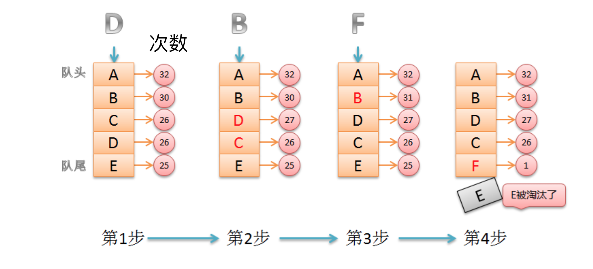

缓存有效期与淘汰策略
有效期 TTL （Time to live)
设置有效期的作用：
- 节省空间
- 做到数据弱一致性，有效期失效后，可以保证数据的一致性
Redis的过期策略
过期策略通常有以下三种：
定时过期
每个设置过期时间的key都需要创建一个定时器，到过期时间就会立即清除。该策略可以立即清除过期的数据，对内存很友好；但是会占用大量的CPU资源去处理过期的数据，从而影响缓存的响应时间和吞吐量。
setex('a', 300, 'aval') setex('b', 600, 'bval')惰性过期
只有当访问一个key时，才会判断该key是否已过期，过期则清除。该策略可以最大化地节省CPU资源，却对内存非常不友好。极端情况可能出现大量的过期key没有再次被访问，从而不会被清除，占用大量内存。
定期过期
每隔一定的时间，会扫描一定数量的数据库的expires字典中一定数量的key，并清除其中已过期的key。该策略是前两者的一个折中方案。通过调整定时扫描的时间间隔和每次扫描的限定耗时，可以在不同情况下使得CPU和内存资源达到最优的平衡效果。
expires字典会保存所有设置了过期时间的key的过期时间数据，其中，key是指向键空间中的某个键的指针，value是该键的毫秒精度的UNIX时间戳表示的过期时间。键空间是指该Redis集群中保存的所有键。
Redis中同时使用了惰性过期和定期过期两种过期策略。
Redis过期删除采用的是定期删除，默认是每100ms检测一次，遇到过期的key则进行删除，这里的检测并不是顺序检测，而是随机检测。那这样会不会有漏网之鱼？显然Redis也考虑到了这一点，当我们去读/写一个已经过期的key时，会触发Redis的惰性删除策略，直接回干掉过期的key
为什么不用定时删除策略?
定时删除,用一个定时器来负责监视key,过期则自动删除。虽然内存及时释放，但是十分消耗CPU资源。在大并发请求下，CPU要将时间应用在处理请求，而不是删除key,因此没有采用这一策略.
定期删除+惰性删除是如何工作的呢?
定期删除，redis默认每个100ms检查，是否有过期的key,有过期key则删除。需要说明的是，redis不是每个100ms将所有的key检查一次，而是随机抽取进行检查(如果每隔100ms,全部key进行检查，redis岂不是卡死)。因此，如果只采用定期删除策略，会导致很多key到时间没有删除。
于是，惰性删除派上用场。也就是说在你获取某个key的时候，redis会检查一下，这个key如果设置了过期时间那么是否过期了？如果过期了此时就会删除。
采用定期删除+惰性删除就没其他问题了么?
不是的，如果定期删除没删除key。然后你也没即时去请求key，也就是说惰性删除也没生效。这样，redis的内存会越来越高。那么就应该采用内存淘汰机制。
缓存淘汰 eviction
Redis自身实现了缓存淘汰
Redis的内存淘汰策略是指在Redis的用于缓存的内存不足时，怎么处理需要新写入且需要申请额外空间的数据。
- noeviction：当内存不足以容纳新写入数据时，新写入操作会报错。
- allkeys-lru：当内存不足以容纳新写入数据时，在键空间中，移除最近最少使用的key。
- allkeys-random：当内存不足以容纳新写入数据时，在键空间中，随机移除某个key。
- volatile-lru：当内存不足以容纳新写入数据时，在设置了过期时间的键空间中，移除最近最少使用的key。
- volatile-random：当内存不足以容纳新写入数据时，在设置了过期时间的键空间中，随机移除某个key。
- volatile-ttl：当内存不足以容纳新写入数据时，在设置了过期时间的键空间中，有更早过期时间的key优先移除。
redis 4.x 后支持LFU策略，最少频率使用
allkeys-lfu
volatile-lfu
LRU
LRU（Least recently used，最近最少使用）
LRU算法根据数据的历史访问记录来进行淘汰数据，其核心思想是“如果数据最近被访问过，那么将来被访问的几率也更高”。
基本思路
新数据插入到列表头部；
每当缓存命中（即缓存数据被访问），则将数据移到列表头部；
当列表满的时候，将列表尾部的数据丢弃。
LFU
LFU（Least Frequently Used 最近最少使用算法）
它是基于“如果一个数据在最近一段时间内使用次数很少，那么在将来一段时间内被使用的可能性也很小”的思路。

LFU需要定期衰减。
Redis淘汰策略的配置
maxmemory
最大使用内存数量 maxmemory-policy noeviction 淘汰策略
思考题
mySQL里有2000w数据，redis中只存20w的数据，如何保证redis中的数据都是热点数据
头条项目方案
缓存数据都设置有效期
配置redis，使用volatile-lru